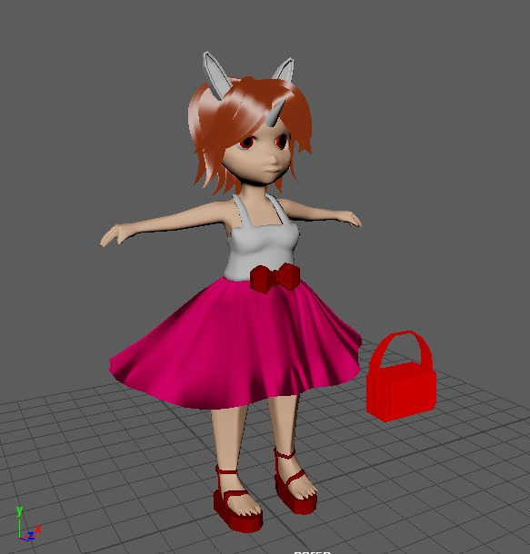
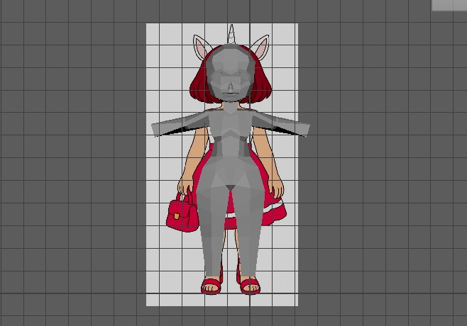
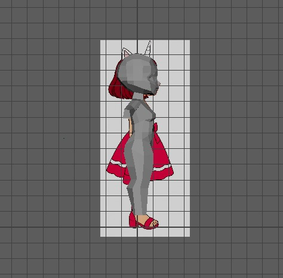
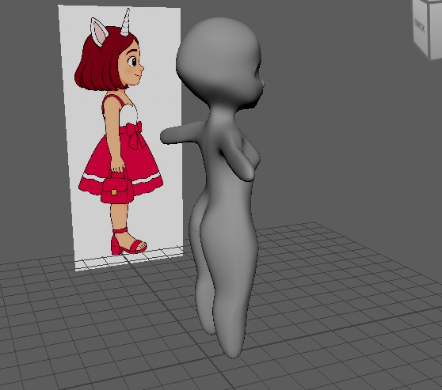
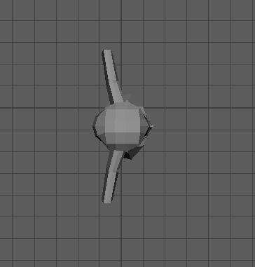

Nuestro personaje 3D

Modelado tridimensional
Este proyecto consiste en desarrollar un personaje tridimensional mediante el uso de herramientas de modelado digital.
Durante el proceso se trabaja con la geometría, los vértices, las caras y las formas para construir y dar volumen al personaje.
Objetivos del proyecto
Diseño
Definir la apariencia y características del personaje.
Modelado 3D
Construir la estructura tridimensional mediante herramientas de modelado.
Acabados
Trabajar los detalles, materiales y apariencia visual del personaje.
Proceso de modelado
- Preparación del diseño del personaje.
- Creación de la geometría inicial.
- Edición de vértices y formas.
- Modelado de las diferentes partes del personaje.
- Aplicación de materiales y detalles.
- Presentación del modelo terminado.
Vistas del personaje

Vista frontal
Representación del personaje de frente.

Vista lateral
Visualización del perfil del personaje.

Vista posterior
Representación de la parte trasera.
Avances del proyecto

Primer avance
Inicio del modelado.
Herramientas utilizadas
Autodesk Maya
Software utilizado para la creación, edición y modelado de objetos y personajes en tres dimensiones.